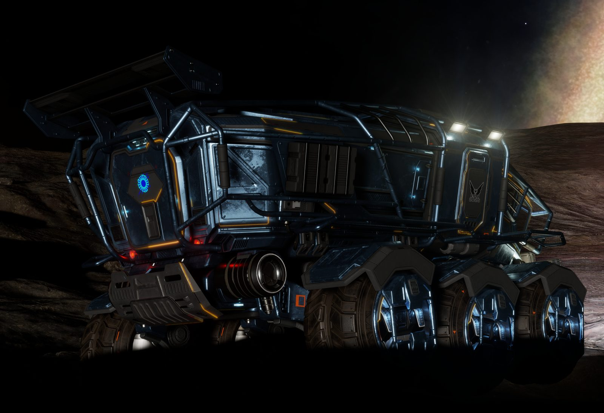
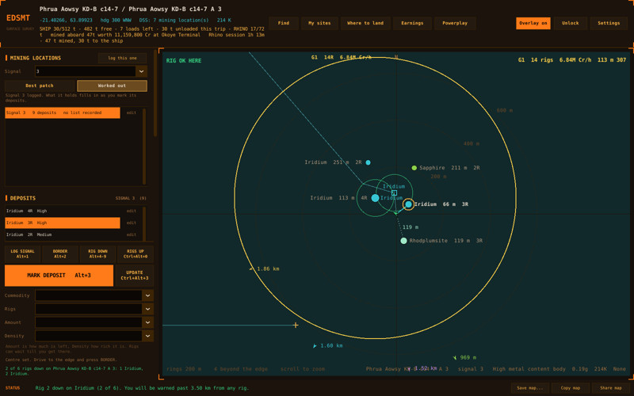
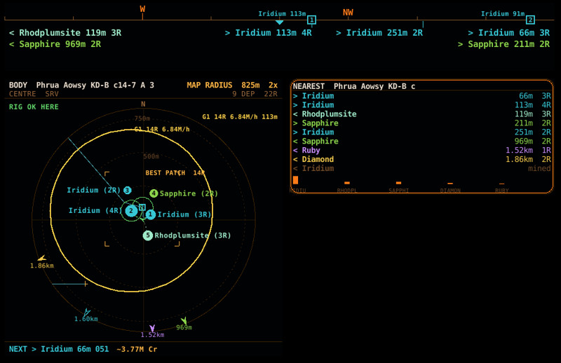
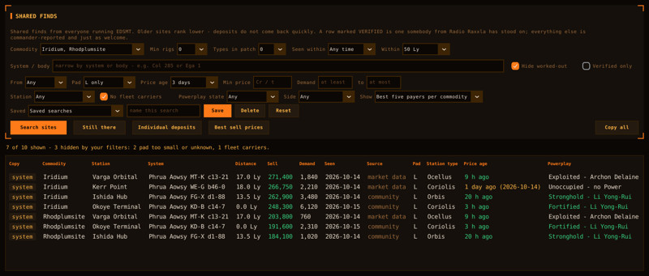
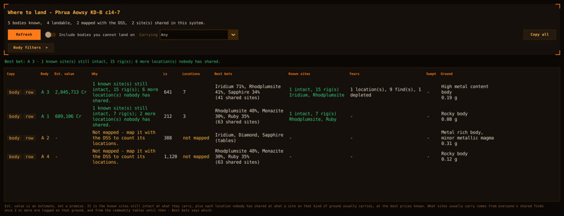
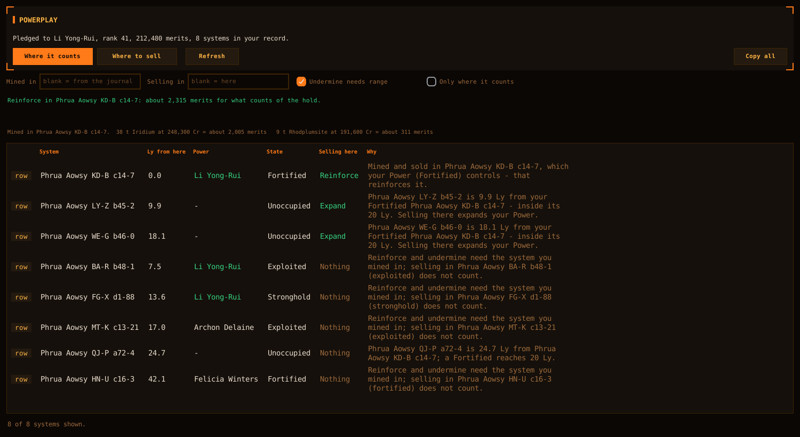
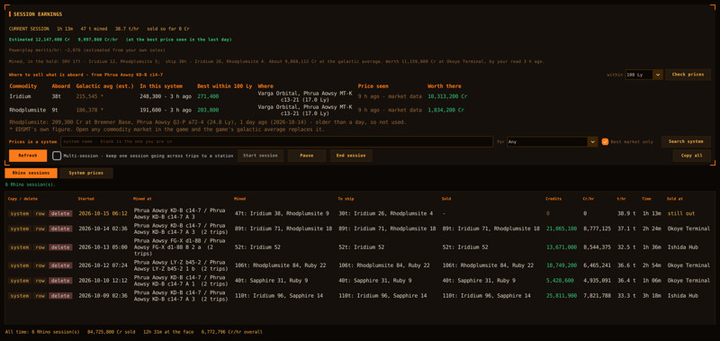
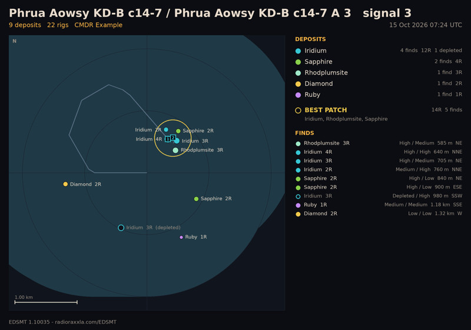

EDSMT
Elite Dangerous Surface Mining Tool
A surface mining companion for the Rhino. It reads your Elite Dangerous journal, so the system, the body, your position and what you mined all come from the game — you never type a coordinate.
Free · Windows · No account · GPL-3.0
Build 1.10035 Elite Dangerous 4.4.2.0 What changed Source: github.com/TheAnnouncer/EDSMT

What it does

Map and rigs
Every deposit you mark, where it is, with the trail you drove and a ring round each rig.

Overlay
A compass tape, a scope and a targets list over the game, so you can drive without leaving it.

Find and selling
Shared sites from other commanders, and where what you mined sells, nearest first.

Where to land
The bodies in the system you are in, ranked by what they are likely to hold.

Powerplay
Whether selling in each system would count for your Power, from your own journal.

Earnings and Discord
The session you are on, with Cr/hr and merits/hr, and a summary for your own Discord channel.
Map and rigs
Drive into a mining location and press a key. EDSMT takes your position from the game the moment you press it, so a deposit records where it is; how far it is and which way to turn are worked out live from wherever you are.
None of these is used by the game's own control schemes. Every one can be changed in Settings.
On the map
- The trail you drove, so you can see the ground you have covered.
- Golden groups: deposits close enough to work in one stop, ringed, with an estimate of what they are worth an hour.
- Rig radar: a ring the rig spacing round every rig you put down, and where the next one fits.
- Density and amount kept apart: how rich a deposit is, and how much of it is left.

The overlay
Boxes over the game, each switched on or off on its own: a compass tape with every recorded deposit, its distance and how many rigs it takes; a scope that zooms 1x, 2x and 4x on a key; the nearest targets; a status line; and a guide that shows the next step and its key. Anything behind you stays pinned to the edge of the tape with a turn arrow rather than dropping off it.
Unlock to drag the boxes where you want them and set the text size of each; lock again and clicks go straight through to the game.
No overlay can draw over a game in exclusive fullscreen. That is DirectX, not EDSMT.

Find and selling
Find searches the community map: sites ranked by rigs, by how many commodities share a patch, and by how recently somebody stood on them, with the distance in light years on every row.
Best sell prices answers where it sells, nearest first, for every commodity you tick. Each price says how old it is and where it came from — your own read of a market, another EDSMT user's, or market data — and a price more than a day old is marked stale rather than shown as current.
Filters for pad size, price age, demand, minimum price, station type, fleet carriers and Powerplay state, and saved searches. The count line says how many rows each filter hid, and why.

Where to land
Every body in the system you are in, ranked: the known sites still intact, the mining locations your DSS found that nobody has shared, and what that kind of ground usually carries. Bodies you map while it is open appear without a click, and your older journals are read once so a system you scanned last month is remembered.
The estimated value is an estimate, not a promise, and the window says what it is based on.

Powerplay
EDSMT reads your pledge and the Powerplay state of every system your journal has been in. For the cargo you mined, it shows what selling in each system would do — Expand, Reinforce, Undermine or nothing — and why, with the ranges measured from your own record.
It warns when part of the hold will not count, such as cargo that was bought or went through a fleet carrier, and gives an estimate of the merits the hold should earn. A second page lists the best payers and nearest buyers for what is aboard, with what selling there does for your Power.

Earnings and the Discord summary
A session starts with your first rig down or the first tonne the Rhino refines, and ends when the last rig is up or the Rhino is back aboard. Pause stops the clock for a break or the drive to a station.
The current session shows its time, tonnes, t/hr, what it is worth at the best credible price, Cr/hr and an estimate of Powerplay merits an hour. Both holds are priced, and the table under it keeps every session before, with what was mined, sold and where.
Only what the Rhino dug up is counted. Cargo you bought or hauled is left out.

Your own Discord channel
Paste a channel's webhook in Settings and EDSMT posts a summary of each Rhino session there — tonnes of each commodity, time, t/hr, credits, Cr/hr and where you sold — with the map picture it saves when the Rhino docks. Finds can go there too, if you want them. Send a test message checks the address first.
The picture is also saved on your PC, and Copy map puts it on the clipboard to paste anywhere.


Community sites
Every deposit you mark goes on the community map, and everyone else's comes back to you under Find and on your own map. A map only some people can see never gets filled in.
Surface deposits do not last the way ring hotspots do — Frontier have said they regenerate at a very slow rate — so age is part of the ranking. A site nobody has seen for two months ranks below a smaller one confirmed last week.
Verified means somebody from Radio Raxxla has driven to it and confirmed it. Reported is any commander's find — just as welcome, and most of the map. The app cannot mark its own finds verified, and a verified site still ages like any other.
When your rigs come up, how you laid them out is shared too, and on a deposit with no plan of your own the layout other commanders used shows as pins on the scope.
Privacy
- Your journal is read on your own PC. EDSMT reads the files the game writes for tools like this one. It never reads the game's memory and never presses a key in the game.
- No account, no sign-up, no Frontier login.
- Your notes, sessions and settings stay on your PC, in
%LOCALAPPDATA%\RadioRaxxla\EDSMT.
- What goes on the community map: the deposits you mark — system, body, commodity, position, rigs and how rich — and the prices at markets you open.
- Your CMDR name is your choice. Share anonymously if you prefer.
- Inara and Discord send nothing until you switch them on and add your own key or webhook.
- It is GPL-3.0. The source is on GitHub, so you can read what it sends and when.
Install and system requirements
EDSMT-Setup.exe is a normal installer: a Start menu entry under Radio Raxxla, an optional desktop shortcut and an entry in Add/Remove Programs. It installs for you only, so it never asks for admin. EDSMT.exe is the same program as one portable file.
EDSMT tells you when there is a new version and installs it on one click, after making a backup of your finds and settings.
"Windows protected your PC" — the build is not code signed. More info → Run anyway. The source is here if you would rather read it first.
What changed
New — one stop for the whole hold, Powerplay, guided survey
- Where to sell: one stop for the whole hold. The three stations that pay most for everything aboard (ship and SRV together), with what each takes, how old its prices are and how many jumps away it is. Sell within 1, 2, 4 or 8 jumps, and see which way a station's price and demand are moving.
- Powerplay window. Expand, Reinforce or Undermine for every system you have visited, judged by where each tonne was mined, with a merit estimate learnt from your own sales.
- Search. Find filters (distance window, pad, station type, carriers, price age, demand, minimum price, Powerplay), body and signal search in Where to land and My sites, and saved searches.
- Guided survey. Numbered waypoints that skip ground already swept, on the compass, scope and map; resumes after a restart.
- Rigs. Spacing rings and NEXT RIG to the nearest legal spot, top patches with Cr/h, the rig planner out of beta, and how many rigs fit per deposit.
- On the map. Your trail, lines to the nearest deposits, scope zoom, map and scope filters, mark a deposit from range, and pointers back to the Rhino or the ship and from orbit to your deposit.
- My sites. Depletion dates and rechecks, favourites, a bin, and import from other mining tools.
- Controls. Joystick and HOTAS buttons for every action, chat commands (off by default), and an optional long press to count a rig.
- After the session. The ship's hold while you are in the Rhino, map pictures, one Discord post per session updated after the sale, and a support bundle for bug reports.
Changed
- Session earnings leads with the current session, with estimated Cr/hr and merits/hr.
- The commodity picker shows a tick for each selected commodity.
Fixed
- Where to sell could show an old or out-of-range price as current, and Aboard could under-count the hold. Every price now shows its age and source, prices older than a day are marked stale, and markets with no demand are left out.
- System prices are listed most expensive first.
- Merits from support missions are no longer counted as merits earned by a sale.
Every earlier build: the full changelog
Questions
Do I need an account, or to log in with Frontier?
No. EDSMT reads the journal files the game writes on your own PC for tools like this one. There is no account, and a Frontier login would not tell it anything about surface mining that the journal does not.
Does it touch the game?
No. It reads the game's journal and status files and draws its boxes over the top. It never reads the game's memory, never injects anything and never presses a key in the game for you.
The boxes do not show over the game.
Set Elite to borderless or windowed. Nothing can draw over exclusive fullscreen — that is DirectX, not EDSMT. The boxes also show only while you are driving a Rhino.
A key does nothing.
Another program got it first — graphics-card overlays, Discord and Steam all grab keys. Pick another in Settings; EDSMT tells you when a key is taken. On UK and European keyboards AltGr is Ctrl+Alt to Windows, which is why the pick-up keys read AltGr there and Ctrl+Alt on a US keyboard.
Alt+3 will not mark the deposit.
All four boxes have to be filled in: commodity, rigs, amount and density. The scanner's density counts when the game names one. A find on the shared map needs the two things somebody deciding whether to fly there wants most.
Can I keep my finds to myself, or share them only with my squadron?
No. Every find goes on the community map for everybody, and everybody's comes back to you under Find. A map only some people can see never gets filled in. Your CMDR name on your finds is your choice.
When does an earnings session start and stop?
It starts with your first rig down, or your first tonne refined in the Rhino, or Start session. It ends when every rig is back up, when the Rhino comes back aboard, or on End session. Pause stops the clock for a break or the drive to a station.
Where do the sell prices come from?
Your own reads of the markets you open, prices other EDSMT users have read, and market data for the best price within the distance you pick. Each says which it is and how old it is; the game's galactic average is shown as an estimate until you open a market.
What are the rig planner and the wing link?
Two betas, both off until you switch them on in Settings. The rig planner: press AltGr+2, drive the deposit's edge back to where you started, and a pin goes on the scope for each rig that fits. The wing link: everyone types the same six-character code and sees each other's Rhinos and rigs on the scope. The server forgets you two minutes after you stop.
The words in the boxes are too small.
Settings has a text size for each box on its own, from 80% to 200%, without making the box itself any bigger. Unlock to drag a box or resize it by its corner.
How do I update, and do I back up first?
EDSMT tells you when there is a new version and installs it on one click. Your deposits, sessions and settings are kept, and a backup goes to Documents › EDSMT backups before it installs. Settings › Back up now makes a copy whenever you like.
Does it work on GeForce NOW?
Not the live parts. On GeForce NOW the game runs on NVIDIA's machine, so the journal and status files EDSMT reads are written there and never reach your PC. That is true of every tool that reads the journal.
Windows says it protected my PC.
A new download trips SmartScreen until enough people have run it. More info, then Run anyway. The source is here too if you would rather read it first.